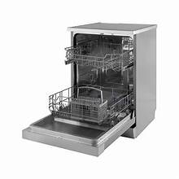
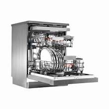
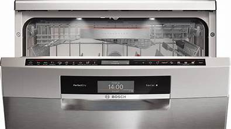

This image shows the inside of a dishwasher with its door open. The dishwasher contains racks for placing plates, bowls, glasses, and other utensils. Water is sprayed through rotating spray arms to clean the dishes efficiently. The stainless-steel interior helps maintain hygiene and durability.
This image displays the internal components of a dishwasher. Important parts such as the motor, pump, water pipes, and filtration system are visible. These components work together to circulate water, remove dirt, and ensure effective cleaning.
This image shows the front of a modern dishwasher with a digital control panel. Users can select different washing modes, adjust settings, and monitor the remaining wash time. The sleek design makes it suitable for modern kitchens.
This image demonstrates a dishwasher being used in a kitchen environment. It highlights the convenience of loading dishes into the machine and starting an automatic wash cycle. Dishwashers save time and reduce manual effort.